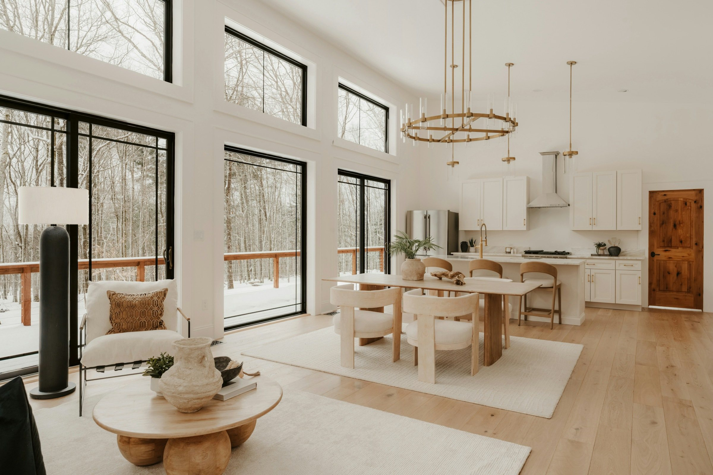
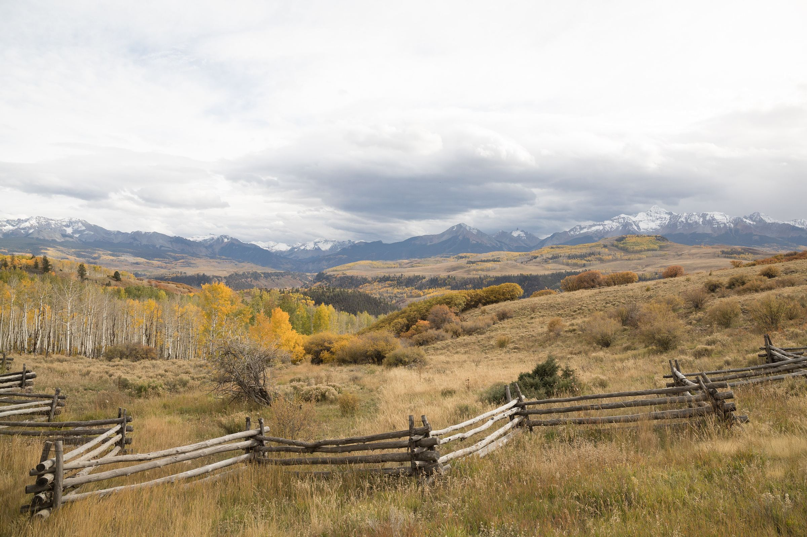
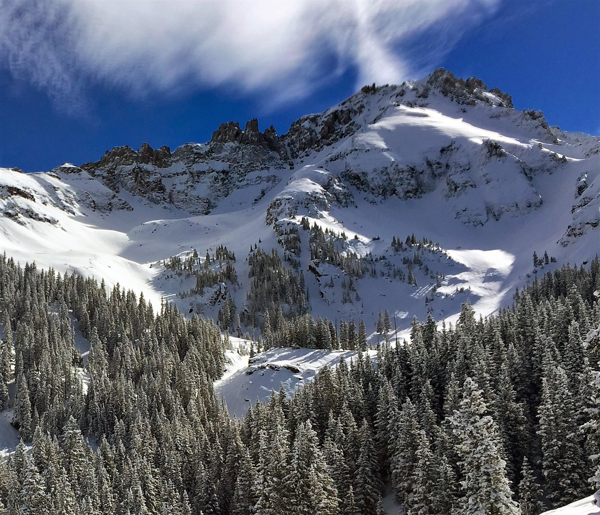
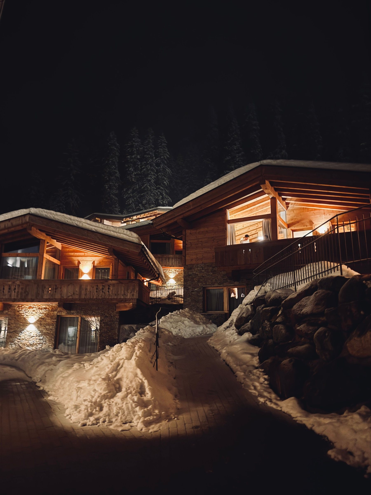
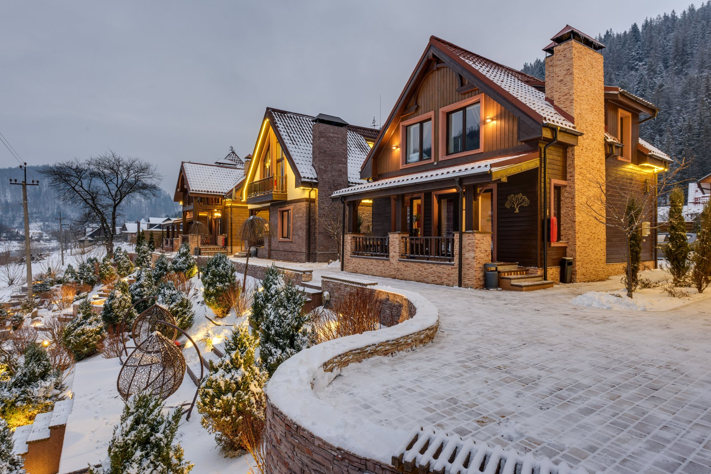
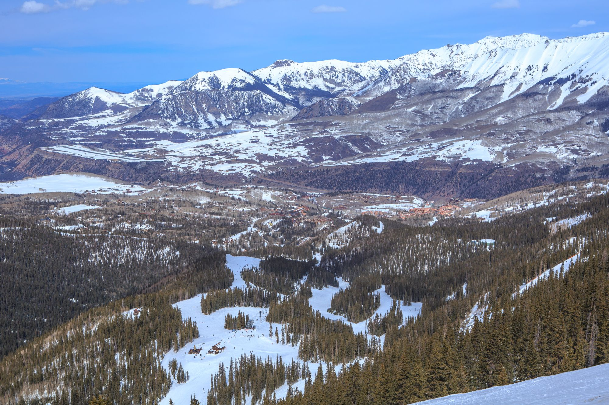
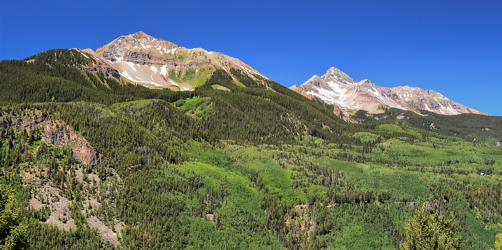
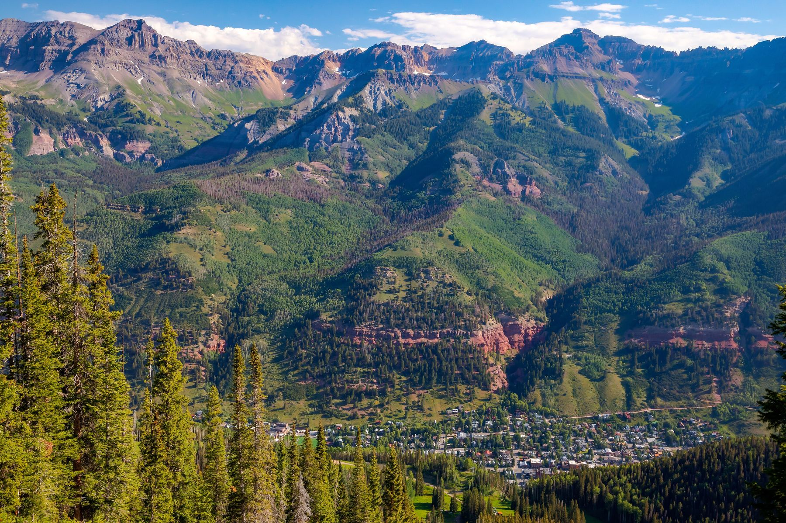
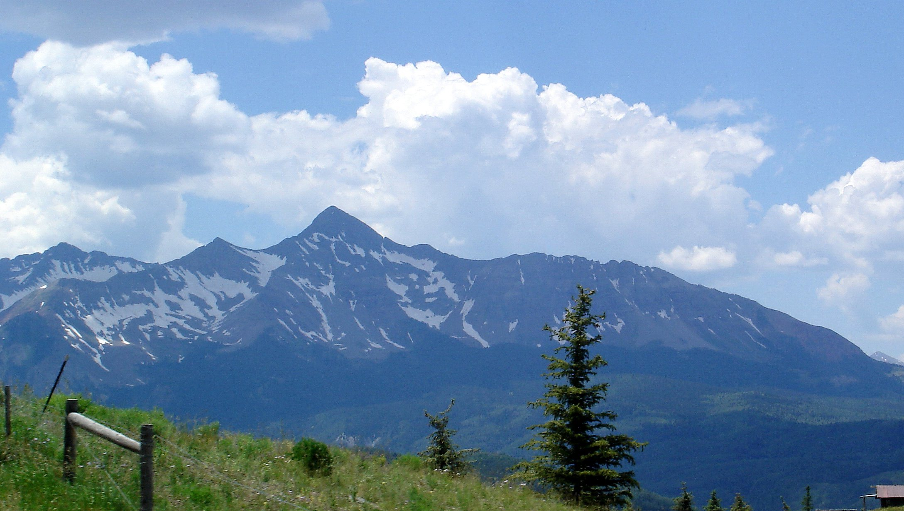

01



Deep Creek Mesa, Colorado
Homes, homesites and 35-acre parcels on the mesa that holds the airport, and what to check before you buy.
Deep Creek Mesa at a glance
Deep Creek Mesa rises northwest of Telluride, and Telluride Regional Airport sits on top of it at 9,070 feet. Its subdivisions lie in unincorporated San Miguel County, about 4 to 8 miles from downtown by road.
The Aldasoro family, from the Pyrenees, began buying homesteads here in 1926. Today the mesa holds a planned community, small lots near the airport and parcels of 35 acres and more, the size at which Colorado's county subdivision definition stops applying. Last Dollar Road ties it together: paved where it leaves Telluride, unpaved farther on, and closed to motor vehicles over Last Dollar Pass to Hastings Mesa from December 1 to May 15.
Saved searches
Each card opens a live search of MLS listings, updated as they change.

01

02

03

04
<!-- IDX_ZONE: homes-for-sale-deep-creek-mesa-feed -->
The newest Deep Creek Mesa listings in one compact row, six to eight homes. Builder places the Showcase hotsheet shortcode here in its compact layout.
Jose Joaquin Aldasoro came from the Pyrenees in 1913 to work for a Utah rancher. With his brother Prudencio and his cousin Serapio he began buying homesteads here in 1926; by the mid-1950s the family held 12 and pastured 5,000 head of sheep. In the mid-1980s part of the ranch passed to the Aldasoro Ranch Homeowners Company, and the county approved a planned unit development of 160 homesites over 1,515 acres (the company's history).
Homes stand on lots of about 1 to 15 acres beside 620 acres of open space, and the old Hogg Ranch buildings mark the entrance. The company runs the water, covenants, design review, trails and roads, and reports Firewise USA recognition as of August 15, 2025. A county easement lets the public ride road bikes on the ranch's private roads.
Sunnyside sits on a bench northwest of town, above the Valley Floor and east of Aldasoro. The county records it as Sunnyside East and Sunnyside Ranch West, 25 parcels between them, nearly all of about 35 acres, and both border National Forest.
The county describes a gated and fenced portion with private roads; the public may ride road bikes only on the stretch of Aldasoro Road that crosses it (county trails). Downtown is about 6 to 7 miles away by road.
Telluride Regional Airport sits on the mesa at 9,070 feet, with a 7,111-foot runway (the airport). Five more subdivisions lie around it and west along Last Dollar Road.

Day to day
School information is factual and by district. Always confirm a specific address in the district's school finder.
Questions
Northwest of Telluride, in unincorporated San Miguel County. Telluride Regional Airport sits on the mesa, and its subdivisions are about 4 to 8 miles from downtown by road.
Not over the pass. The county plows about 4.1 miles from the Telluride end and the stretch past the airport is plowed privately, but Last Dollar Pass is closed to motor vehicles from December 1 to May 15.
The homeowners company gives 160 homesites over 1,515 acres, on lots of about 1 to 15 acres with 620 acres of open space. It runs its own water system and design review.
Telluride School District R-1, for every subdivision on the mesa. Always confirm a specific address with the district.
Nearby




Resources
Contact
He has lived in Telluride since 1998. Tell him what you need from a homesite or a parcel, and he will tell you which roads are plowed, where the water comes from and how each association works.